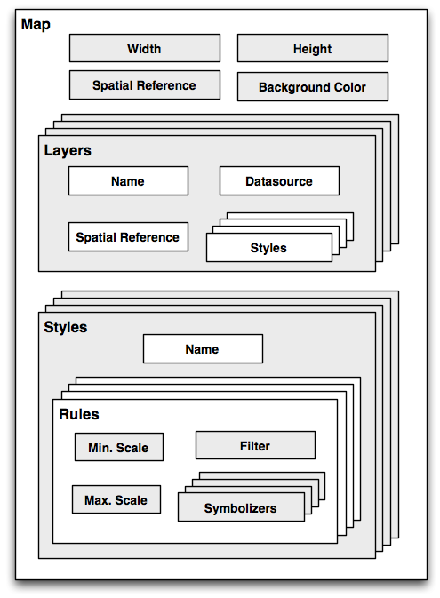

可视化地理空间数据#
Visualizing geospatial data
除非将地理空间数据转换为视觉形式（即，除非将其渲染为某种图像），否则很难（甚至不可能）理解它。将地理空间数据转换为图像需要合适的工具包。虽然有几种这样的工具包可用，但我们将特别关注其中一种：Mapnik。
It’s very hard, if not impossible, to understand geospatial data unless it is turned into a visual form—that is, until it is rendered as an image of some sort. Converting geospatial data into images requires a suitable toolkit. While there are several such toolkits available, we will look at one in particular: Mapnik.
Mapnik#
Mapnik
Mapnik 是一个免费的工具包，用于构建地图应用程序。它从 PostGIS 数据库、Shapefile 或任何其他支持的 GDAL/OGR 格式获取地理空间数据，并将其转换为清晰渲染、外观良好的图像。
渲染地图涉及许多复杂的问题，而 Mapnik 做得很好，它允许应用程序开发人员控制渲染过程。规则控制哪些要素应出现在地图上，而“符号化器”控制这些要素的视觉外观。
Mapnik 允许开发人员创建 XML 样式表来控制地图创建过程。就像 CSS 样式表一样，Mapnik 的样式表让你完全控制地理空间数据的渲染方式。或者，如果你喜欢，你也可以手动创建样式。
Mapnik 本身是用 C++ 编写的，但包含了绑定，允许通过 Python 访问几乎所有的 Mapnik 功能。由于这些绑定是包含在主代码库中的，而不是由第三方开发人员添加的，因此对 Python 的支持直接集成在 Mapnik 中。这使得 Python 非常适合开发基于 Mapnik 的应用程序。
Mapnik 被 OpenStreetMap（http://openstreetmap.org）、EveryBlock（http://everyblock.com）等广泛使用。由于 Mapnik 的输出只是图像，因此很容易将其作为 Web 应用程序的一部分，或者将输出直接显示在窗口中，作为桌面应用程序的一部分。Mapnik 在桌面和 Web 上都能很好地工作。
Mapnik is a freely-available toolkit for building mapping applications. It takes geospatial data from a PostGIS database, shapefile, or any other format supported by GDAL/OGR, and turns it into clearly-rendered, good-looking images.
There are a lot of complex issues involved in rendering maps well, and Mapnik does a good job of allowing the application developer to control the rendering process. Rules control which features should appear on the map, while “symbolizers” control the visual appearance of these features.
Mapnik allows developers to create XML stylesheets that control the map-creation process. Just as with CSS stylesheets, Mapnik’s stylesheets allow you complete control over the way geospatial data is rendered. Alternatively, you can create your styles by hand if you prefer.
Mapnik itself is written in C++, though bindings are included which allow access to almost all of the Mapnik functionality via Python. Because these bindings are included in the main code base rather than being added by a third party developer, support for Python is built right into Mapnik. This makes Python eminently suited to developing Mapnik-based applications.
Mapnik is heavily used by OpenStreetMap (http://openstreetmap.org), EveryBlock (http://everyblock.com), among others. Since the output of Mapnik is simply an image, it is easy to include Mapnik as part of a web-based application, or you can display the output directly in a window as part of a desktop-based application. Mapnik works equally well on the desktop and on the web.
设计#
Design
在使用 Mapnik 时，您主要处理的对象称为 Map。一个 Map 对象包含以下部分：
{kind=link}
在创建 Map 对象时，您需要为以下内容分配值：
地图的整体 宽度 和 高度 （以像素为单位）。
用于地图的 空间参考。
用于绘制地图内容背景的 背景颜色。
然后，您定义一个或多个包含地图内容的 图层。每个图层具有以下内容：
名称。
一个 Datasource 对象，定义从哪里获取此图层的数据。数据源可以是对数据库的引用，或是 shapefile 或其他 GDAL/OGR 数据源。
用于该图层的 空间参考。如果需要，这可以与地图整体使用的空间参考不同。
一个 样式 列表，应用于该图层。每个样式通过名称引用，因为样式通常在其他地方（通常是 XML 样式表）定义。
最后，您定义一个或多个 样式，告诉 Mapnik 如何绘制各种图层。每个样式都有一个 名称 和一组 规则，它们构成样式定义的主要部分。每个 规则 具有：
最小比例 和 最大比例 值（称为“比例分母”）。当地图的比例在此范围内时，规则 才会生效。
一个 过滤器 表达式。规则 仅会应用于与该过滤器表达式匹配的要素。
一组 符号化器。这些符号化器定义了如何将匹配的要素绘制到地图上。
Mapnik 实现了多种不同类型的符号化器：
LineSymbolizer 用于沿线、线性环或多边形外部绘制“笔划”。
LinePatternSymbolizer 使用图像文件（由名称指定）的内容，在线、线性环或多边形外部绘制“笔划”。
PolygonSymbolizer 用于绘制多边形的内部区域。
PolygonPatternSymbolizer 使用图像文件（同样由名称指定）的内容，绘制多边形的内部区域。
PointSymbolizer 使用图像文件（由名称指定）的内容，在一个点上绘制图像。
TextSymbolizer 绘制要素的文本。要绘制的文本取自要素的属性之一，且有许多选项来控制文本的绘制方式。
RasterSymbolizer 用于绘制从任何 GDAL 数据集获取的栅格数据。
ShieldSymbolizer 绘制文本标签和一个点。这类似于使用 PointSymbolizer 绘制图像，使用 TextSymbolizer 绘制标签，但它确保文本和图像一起绘制。
BuildingSymbolizer 使用伪 3D 效果绘制一个多边形，使其看起来像是三维建筑物。
MarkersSymbolizer 绘制蓝色方向箭头或 SVG 标记，沿着多边形和线几何体的方向绘制。
当您实例化一个符号化器并将其添加到样式中（无论是通过代码直接进行，还是通过 XML 样式表），您需要提供一些参数来定义符号化器的工作方式。例如，在使用 PolygonSymbolizer 时，您可以指定填充颜色、不透明度和“伽玛”值，后者有助于绘制相邻的相同颜色的多边形而不显示边界:
p = mapnik.PolygonSymbolizer(mapnik.Color(127, 127, 0))
p.fill_opacity = 0.8
p.gamma = 0.65
如果使用此符号化器的规则匹配一个或多个多边形，则这些多边形将使用给定的颜色、不透明度和伽玛值绘制。
当然，不同的规则可以有不同的符号化器，也可以有不同的过滤器值。例如，您可以设置规则，根据国家的人口使用不同的颜色来绘制它们。
When using Mapnik, the main object you are dealing with is called the Map. A Map object has the following parts:
When creating a Map object, you assign values for the following:
The overall width and height of the map, in pixels.
The spatial reference to use for the map.
The background color to draw behind the contents of the map.
You then define one or more Layers which hold the map’s contents. Each Layer has the following:
A name.
A Datasource object defining where to get the data for this layer from. The Datasource can be a reference to a database, or it can be a shapefile or other GDAL/OGR data source.
A spatial reference to use for this layer. This can be different from the spatial reference used by the map as a whole, if appropriate.
A list of styles to apply to this layer. Each style is referred to by name, since the styles are actually defined elsewhere (often in an XML stylesheet).
Finally, you define one or more Styles, which tell Mapnik how to draw the various layers. Each Style has a name and of a list of Rules, which make up the main part of the style’s definition. Each Rule has:
A minimum scale and maximum scale value (called the “scale denominator”). The Rule will only apply if the map’s scale is within this range.
A filter expression. The Rule will only apply to those features which match this filter expression.
A list of Symbolizers. These define how the matching features will be drawn onto the map.
There are a number of different types of Symbolizers implemented by Mapnik:
LineSymbolizer is used to draw a “stroke” along a line, a linear ring, or around the outside of a polygon.
LinePatternSymbolizer uses the contents of an image file (specified by name) to draw the “stroke” along a line, a linear ring, or around the outside of a polygon.
PolygonSymbolizer is used to draw the interior of a polygon.
PolygonPatternSymbolizer uses the contents of an image file (again specified by name) to draw the interior of a polygon.
PointSymbolizer uses the contents of an image file (specified by name) to draw an image at a point.
TextSymbolizer draws a feature’s text. The text to be drawn is taken from one of the feature’s attributes, and there are numerous options to control how the text is to be drawn.
RasterSymbolizer is used to draw raster data taken from any GDAL dataset.
ShieldSymbolizer draws a textual label and a point together. This is similar to the use of a PointSymbolizer to draw the image and a TextSymbolizer to draw the label, except that it ensures that both the text and the image are drawn together.
BuildingSymbolizer uses a pseudo-3D effect to draw a polygon, to make it appear that the polygon is a three-dimensional building.
MarkersSymbolizer draws blue directional arrows or SVG markers following the direction of polygon and line geometries.
When you instantiate a Symbolizer and add it to a style (either directly in code, or via an XML stylesheet), you provide a number of parameters which define how the Symbolizer should work. For example, when using the PolygonSymbolizer, you can specify the fill color, the opacity, and a “gamma” value that helps draw adjacent polygons of the same color without the boundary being shown:
p = mapnik.PolygonSymbolizer(mapnik.Color(127, 127, 0))
p.fill_opacity = 0.8
p.gamma = 0.65
If the Rule that uses this Symbolizer matches one or more polygons, those polygons will be drawn using the given color, opacity, and gamma value.
Different rules can, of course, have different Symbolizers, as well as different filter values. For example, you might set up rules which draw countries in different colors depending on their population.
示例代码#
Example code
以下示例程序使用 Mapnik 显示一个简单的世界地图：
import mapnik
symbolizer = mapnik.PolygonSymbolizer(mapnik.Color("darkgreen"))
rule = mapnik.Rule()
rule.symbols.append(symbolizer)
style = mapnik.Style()
style.rules.append(rule)
layer = mapnik.Layer("mapLayer")
layer.datasource = mapnik.Shapefile(file="TM_WORLD_BORDERS-0.3.shp")
layer.styles.append("mapStyle")
map = mapnik.Map(800, 400)
map.background = mapnik.Color("steelblue")
map.append_style("mapStyle", style)
map.layers.append(layer)
map.zoom_all()
mapnik.render_to_file(map, "map.png", "png")
备注
如果您正在运行 Mapnik 版本 2.0，您应该将程序第一行的 import mapnik 替换为 import mapnik2 as mapnik。
注意，程序创建了一个 PolygonSymbolizer 来显示国家多边形，然后将符号化器附加到 Mapnik 的 Rule 对象。接着，规则成为 Mapnik Style 对象的一部分。然后，我们创建了一个 Mapnik 图层对象，从 shapefile 数据源读取图层的地图数据。最后，创建了一个 Mapnik Map 对象，附加了图层，并将生成的地图渲染为 PNG 格式的图像文件。
{kind=link}
The following example program displays a simple world map using Mapnik:
import mapnik
symbolizer = mapnik.PolygonSymbolizer(mapnik.Color("darkgreen"))
rule = mapnik.Rule()
rule.symbols.append(symbolizer)
style = mapnik.Style()
style.rules.append(rule)
layer = mapnik.Layer("mapLayer")
layer.datasource = mapnik.Shapefile(file="TM_WORLD_BORDERS-0.3.shp")
layer.styles.append("mapStyle")
map = mapnik.Map(800, 400)
map.background = mapnik.Color("steelblue")
map.append_style("mapStyle", style)
map.layers.append(layer)
map.zoom_all()
mapnik.render_to_file(map, "map.png", "png")
备注
If you are running Mapnik Version 2.0, you should replace the import mapnik statement in the first line of this program with import mapnik2 as mapnik.
Notice that this program creates a PolygonSymbolizer to display the country
polygons, and then attaches the symbolizer to a Mapnik Rule object. The Rule
then becomes part of a Mapnik Style object. We then create a Mapnik Layer object,
reading the layer’s map data from a shapefile data source. Finally, a Mapnik Map
object is created, the layer is attached, and the resulting map is rendered to a
PNG-format image file:
文档#
Documentation
Mapnik 的文档对于一个开源项目来说算是相当不错的：提供了良好的安装指南和一些很好的教程，但 API 文档通常令人困惑。Python 文档源自 C++ 文档，主要集中在描述 Python 绑定的实现方式，而不是用户如何使用 Python 与 Mapnik 进行交互——有很多技术细节对 Python 程序员并不相关，而且很多 Python 特定的描述也缺失了。
开始使用 Mapnik 的最佳方式是遵循安装指南，然后完成提供的 Python 专用教程。之后，您可以查看 Mapnik Wiki 上的学习页面：
http://trac.mapnik.org/wiki/LearningMapnik
尽管 Wiki 中并非所有内容都与 Python 相关，但花时间阅读是非常值得的。尽管 Python API 文档有其局限性，但查看它也是一个好主意。主页列出了可用的各种类以及一些有用的函数，很多函数都有文档说明。类本身列出了可以访问的方法和属性（特性），即使许多方法缺乏 Python 特定的文档，您通常可以猜到它们的功能。
备注
本书的第 8 章 使用 Python 和 Mapnik 生成地图 包含了有关 Mapnik 的全面描述，以及如何在 Python 中使用它；您可能会发现这比 Mapnik 网站上的 Python API 文档更有用。
Mapnik’s has reasonable documentation for an open source project: there are good installation guides and some excellent tutorials, but the API documentation is often confusing. The Python documentation is derived from the C++ documentation, and concentrates on describing how the Python bindings are implemented rather than how an end user would work with Mapnik using Python—there’s a lot of technical details that aren’t relevant to the Python programmer, and many Python-specific descriptions are missing.
The best way to get started with Mapnik is to follow the installation instructions, and then to work your way through the supplied Python-specific tutorial. You can then check out the Learning Mapnik page on the Mapnik Wiki:
http://trac.mapnik.org/wiki/LearningMapnik
It is well worth spending some time reading through the Mapnik Wiki, even though not all of it is Python-specific. It is also a good idea to look at the Python API documentation, despite its limitations. The main page lists the various classes, which are available and a number of useful functions, many of which are documented. The classes themselves list the methods and properties (attributes) you can access, and even though many of these lack Python-specific documentation, you can generally guess what they do.
备注
Chapter 8, Using Python and Mapnik to Produce Maps, of this book includes a comprehensive description of Mapnik and how to use it from Python; you may find this more useful than the Python API documentation on the Mapnik website.
可用性#
Availability
Mapnik 可以在所有主要操作系统上运行，包括 MS Windows、Mac OS X 和 Linux。Mapnik 的主网站地址是：
提供了下载链接，您可以下载 Mapnik 的源代码，在 Unix 系统上可以轻松编译，也可以下载适用于 Windows 和 Mac OS X 的预构建二进制文件。
备注
请确保安装 Mapnik 版本 2.0 或更高版本；您在本书中的示例操作需要使用这个版本。
Mapnik runs on all major operating systems, including MS Windows, Mac OS X, and Linux. The main Mapnik website can be found at:
Download links are provided for downloading the Mapnik source code, which can be readily compiled if you are running on a Unix machine, and you can also download prebuilt binaries for Windows and Mac OS X.
备注
Make sure that you install Mapnik Version 2.0 or later; you will need to use this version as you work through the examples in this book.